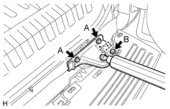

ЗАДНИЙ БАМПЕР > УСТАНОВКА |
| 1. УСТАНОВИТЕ АНТЕННУ ЭЛЕКТРОННОГО КЛЮЧА (для моделей с системой посадки и запуска) |
Установите антенну электронного ключа и закрепите ее болтом.
| 2. УСТАНОВИТЕ ЛЕВЫЙ БОКОВОЙ КРОНШТЕЙН КРЕПЛЕНИЯ ЗАДНЕГО БАМПЕРА |
Подсоедините разъем.
Установите боковой кронштейн крепления заднего бампера и закрепите его болтами.
| 3. УСТАНОВИТЕ ПРАВЫЙ БОКОВОЙ КРОНШТЕЙН КРЕПЛЕНИЯ ЗАДНЕГО БАМПЕРА |
| 4. УСТАНОВИТЕ ЛЕВУЮ БОКОВУЮ ОПОРУ ЗАДНЕГО БАМПЕРА № 2 |
Установите боковую опору заднего бампера № 2 и закрепите ее болтами.
| 5. УСТАНОВИТЕ ЛЕВЫЙ ВЕРХНИЙ ДЕРЖАТЕЛЬ ЗАДНЕГО БАМПЕРА |
Введите в зацепление фиксатор, чтобы установить верхний держатель заднего бампера.
| 6. УСТАНОВИТЕ ВЕРХНИЙ ПРАВЫЙ ДЕРЖАТЕЛЬ ЗАДНЕГО БАМПЕРА |
| 7. УСТАНОВИТЕ ЛЕВЫЙ ЗАДНИЙ БЛОК ФОНАРЕЙ В СБОРЕ |
Подсоедините разъем.
Введите в зацепление фиксатор и 2 захвата, чтобы установить фонарь.
Заверните 2 болта.
| 8. УСТАНОВИТЕ ПРАВЫЙ ЗАДНИЙ БЛОК ФОНАРЕЙ В СБОРЕ |
| 9. УСТАНОВИТЕ УСИЛЕНИЕ ЛЕВОГО БУФЕРНОГО БРУСА ЗАДНЕГО БАМПЕРА |
Установите усиление буферного бруса заднего бампера и закрепите его 3 болтами.
| 10. УСТАНОВИТЕ УСИЛЕНИЕ ПРАВОГО БУФЕРНОГО БРУСА ЗАДНЕГО БАМПЕРА |
| 11. УСТАНОВИТЕ ЛЕВЫЙ ОКОНЕЧНЫЙ ДЕРЖАТЕЛЬ ЗАДНЕГО БАМПЕРА (для моделей с оконечным держателем заднего бампера) |
Установите оконечный держатель заднего бампера и закрепите его винтом.
| 12. УСТАНОВИТЕ ПРАВЫЙ ОКОНЕЧНЫЙ ДЕРЖАТЕЛЬ ЗАДНЕГО БАМПЕРА (для моделей с оконечным держателем заднего бампера) |
| 13. УСТАНОВИТЕ ЛЕВУЮ БОКОВУЮ ОПОРУ ЗАДНЕГО БАМПЕРА |
Введите в зацепление 4 захвата, чтобы установить боковую опору заднего бампера.
Заверните 3 винта.
| 14. УСТАНОВИТЕ ПРАВУЮ БОКОВУЮ ОПОРУ ЗАДНЕГО БАМПЕРА |
| 15. УСТАНОВИТЕ БОКОВУЮ ОПОРУ ЗАДНЕГО БАМПЕРА № 3 |
Установите боковую опору заднего бампера № 3 и закрепите ее винтом.
| 16. УСТАНОВИТЕ ОБЛИЦОВКУ ЗАДНЕГО БАМПЕРА (для 5-дверных моделей) |
Для моделей с сенсорной системой помощи при парковке TOYOTA и противотуманными фарами:
Присоедините 4 разъема.
Для моделей с сенсорной системой помощи при парковке TOYOTA без противотуманных фар:
Подсоедините 2 разъема.
Для моделей без сенсорной системы помощи при парковке TOYOTA и с противотуманными фарами:
Подсоедините 2 разъема.
Введите в зацепление 14 захватов и установите накладку заднего бампера.
Заверните 6 болтов и введите в зацепление 2 фиксатора.
| 17. УСТАНОВИТЕ ОБЛИЦОВКУ ЗАДНЕГО БАМПЕРА (для 3-дверных моделей) |
Для моделей с сенсорной системой помощи при парковке TOYOTA и противотуманными фарами:
Присоедините 4 разъема.
Для моделей с сенсорной системой помощи при парковке TOYOTA без противотуманных фар:
Подсоедините 2 разъема.
Для моделей без сенсорной системы помощи при парковке TOYOTA и с противотуманными фарами:
Подсоедините 2 разъема.
Введите в зацепление 10 захватов и установите накладку заднего бампера.
Заверните 7 болтов и введите в зацепление 2 фиксатора.
| 18. УСТАНОВИТЕ БРЫЗГОВИК ЗАДНЕЙ ЛЕВОЙ БОКОВОЙ ПАНЕЛИ |
Установите брызговик задней боковой панели и закрепите его 5 винтами и 2 фиксаторами.
| 19. УСТАНОВИТЕ БРЫЗГОВИК ПРАВОЙ ЗАДНЕЙ БОКОВОЙ ПАНЕЛИ |
| 20. УСТАНОВИТЕ ПЛАСТИНУ ЗАДНЕГО БАМПЕРА № 1 |
Введите в зацепление 10 захватов и 10 направляющих, чтобы установить пластину заднего бампера № 1.
| 21. УСТАНОВИТЕ ОГРАНИЧИТЕЛЬ ОТКРЫВАНИЯ ДВЕРИ БАГАЖНОГО ОТДЕЛЕНИЯ |
Со стороны бампера:
|  |
Установите ограничитель открывания двери багажного отделения с нижним кронштейном крепления амортизатора двери багажного отделения и закрепите его 2 болтами A.
Вверните болт B.
Закрепите жгут проводов.
Со стороны двери багажного отделения:
 |
Присоедините фиксатор, чтобы установить ограничитель открывания двери багажного отделения с нижним кронштейном крепления амортизатора двери багажного отделения.
Вверните 2 болта.
| 22. УСТАНОВИТЕ ПЛАСТИНУ БУФЕРНОГО БРУСА ЗАДНЕГО БАМПЕРА |
Введите в зацепление 14 захватов, чтобы установить пластину буферного бруса заднего бампера.
| 23. УСТАНОВИТЕ КРЫШКУ ОТВЕРСТИЯ ЯЩИКА ДЛЯ ДОМКРАТА |
Введите в зацепление 2 захвата, чтобы установить крышку отверстия ящика для домкрата.
| 24. УСТАНОВИТЕ ПОВОРОТНЫЙ БУКСИРНЫЙ КРЮК В СБОРЕ (для моделей с поворотным буксирным крюком) |
Установите буксирный крюк и закрепите его с помощью 4 болтов и 4 гаек.
Установите запасное колесо (для автомобилей с запасным колесом, закрепленным на днище кузова).